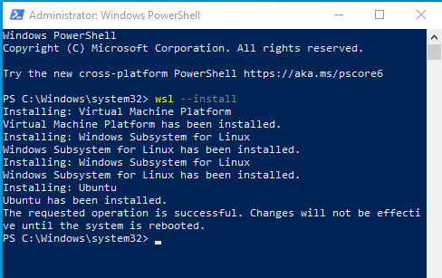
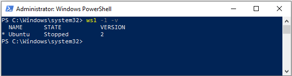
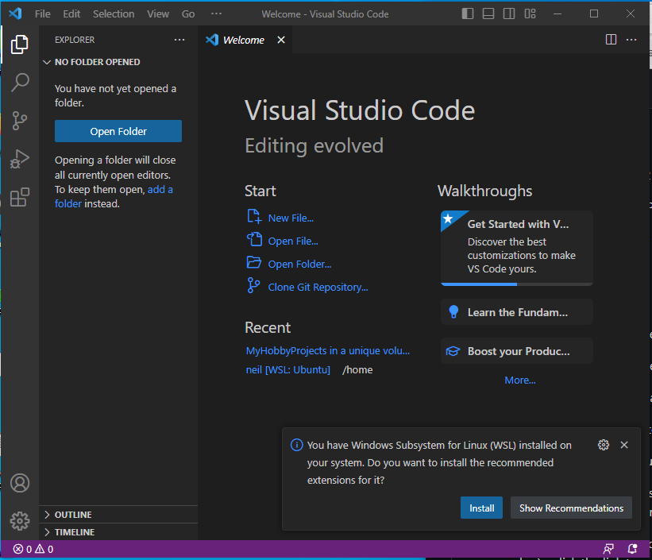
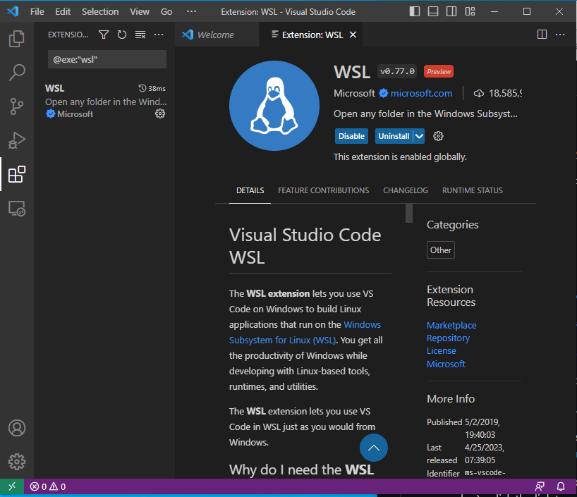
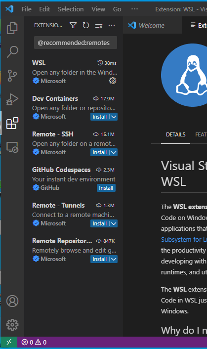
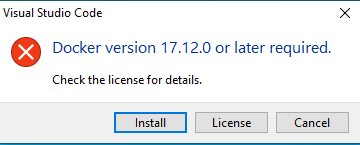
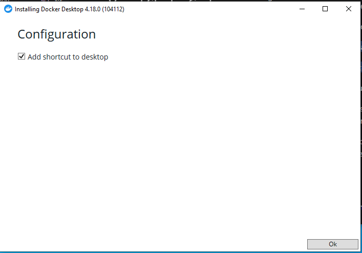
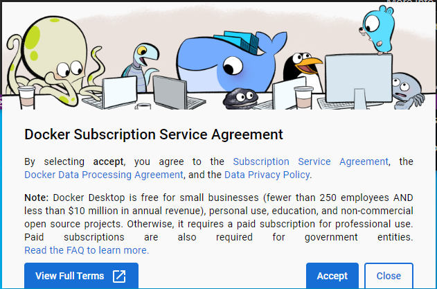
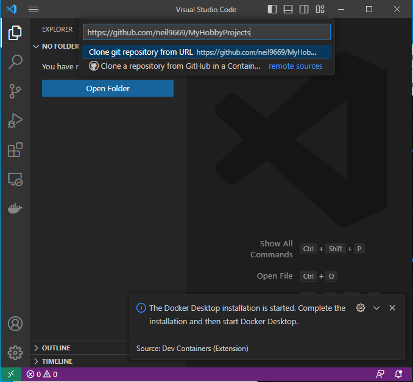

This is a quick walkthrough to setup a local development environment in Windows, for the Code Institute Diploma in Full Stack Web Development.
This environment is not strictly necessary as all the IDE tools are available online however, it does provide a useful exercise for the more adventurous and a 'plan b' should there be any connectivity issues.
This article will provide the content for my milestone project 1 and is currenly in draft.
For the purpose of the course I have installed a clean build of the latest version of Windows10. This is not strictly necessary but does remove the clutter of previous installations and a task I perform regularly anyway. I won't go into detail about the installation as it is well documented in Google.
After installing all the latest updates I put the minimum software on that use regularly. I use Chocolately to manage this as it is a great package manger for windows and all installations can be done from a few command lines
Your GitHub repository URL with CI Template provisioned from https://github.com/Code-Institute-Org/gitpod-full-template
Windows Subsystem for Linux - WSL2 is the latest and improved version.
Python3
VSCode - plus Remote, Docker and git extensions
Optional step to install to install Chocolately. This can skipped and required applications can be downloaded and installed manually.
To install chocolatey open a Powershell terminal as Administrator type the following >:
ensure Get-ExecutionPolicy is not Restricted
>Get-ExecutionPolicy
#INSERT IMAGE
if result is Restricted then run
>Set-ExecutionPolicy AllSigned
#INSERT IMAGE
Install Chocolatey with the following command
>Set-ExecutionPolicy Bypass -Scope Process -Force; [System.Net.ServicePointManager]::SecurityProtocol = [System.Net.ServicePointManager]::SecurityProtocol -bor 3072; iex ((New-Object System.Net.WebClient).DownloadString('https://community.chocolatey.org/install.ps1'))
#INSERT IMAGE
More details and apps are available at the website https://community.chocolatey.org/packages
You may need to close and re-open Powershell as Administrator if you encounter any errors when trying to install packages.
Now install your required applications. Mine is as follows:
>choco install firefox googlechrome 7zip teamviewer winscp slack ventoy putty git github-desktop postman -y
#INSERT IMAGE
If you are running Windows 10 version 2004 and higher (Build 19041 and higher) or Windows 11, installation is much simpler. I'm using Windows 10 Home 22H2 19045.2728 at time of writing. More information can be found at https://learn.microsoft.com/en-us/windows/wsl/install if these instructions don't work for you.
Open Powershell as Administrator and enter the following:
>wsl --install

Accept and allow any prompts.
When complete, restart Windows to download and configure further updates.
When Windows reboots, Ubuntu should continue to install in a Terminal window. This may take a few minutes but, when complete you'll you'll be asked to enter a new UNIX username.
This will be specifically for Ubuntu and not related to your Windows login. I entered neil and created a new password when prompted.
You are now in a Bash terminal in a Linux Ubuntu virtual environment (black window). Leave this window open and open another Powershell window as Administrator and check your wsl installation.
Type the following in Powershell >:
>wsl -l -v
NAME STATE VERSION
* Ubuntu Running 2

Version 2 confirms wsl2 is installed
In Powershell as Admistrator type >:
>choco install vscode -y
#INSERT IMAGE powershell
Open VSCode

then press ctrl shift and p

Look for the Remote: Development Extensions pack and select it
then install from the left hand panel:
(wsl should already have installed)
Dev Containers - install
Remote ssh - install
Github Codespaces - install

Press ctrl shift and p again and look for
Dev containers: clone repository in container volume and accept all defaults: got it and install
Allow Docker Desktop to install. Finally Close and log out of Windows to complete the installation.


Log back in to Windows and allow install to continue, accept Docker terms and conditions and wait for it to load up.

Skip the next details or, fill in the form if you prefer.
#ADD IMAGE HERE
Wait until the Docker engine starts. Be patient, this can take a while.
##ADD IMAGE HERE
Back in VSCode Press ctrl shift and p again and selectDev containers: clone repository in container volume again. This time, when promted, paste your repository url to clone it locally.

At the bottom right of VSCode window you will see:
Starting Dev Container (show log) - click the link to see the build progress in the Terminal... It takes about 10 minutes to complete. When complete hit the + symbol next to Dev containers to add a Bash shell. Here you can add git commands just like in GitPod.
#ADD IMAGE HERE
Try the python3 -m http.server command. This time you page opens in a localhost browser.
To push files to your remote repository you can add global config settings to default your elocal environment.
> git config --global user.email "your github email"
> git config --global user.name "your github name"
When you do git push you'll be prompted for a password This is a useful video that gives more generic information on setting up development environments using VSCode, WSL and Docker https://www.youtube.com/watch?v=SDa3v4Quj7Y